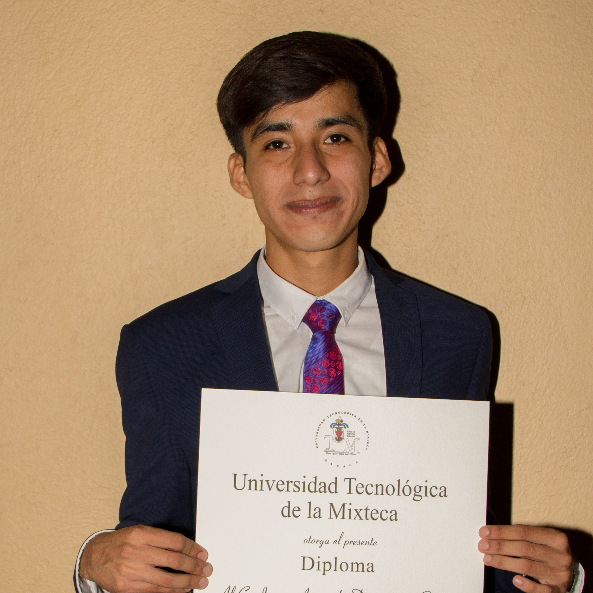

Objective
- Collaborate with an organization that allows me to perform and strengthen my skills and knowledge
acquired throughout my professional training, in order to be able to consolidate myself in the
professional area and serve the organization in the best way possible.

Professional Training
- Mechatronic Engineering (2014-2019)
- Universidad Tecnológica de la Mixteca (UTM) in Huajuapan de León. Curriculum 2013.
- Optional subjects: Advanced Control, CD Machine Control Using CD-CD Converters, CA Machine Control, Mobile Robotics.
- Professional practices: Vantage Pro2 meteorological system automation(2017)
- Universidad Tecnológica de la Mixteca (Mechatronic Engineering Institute) in Huajuapan de León.
- I participated on a project and the Vantage weather system was automated. I was able to work mainly with sensors,
graphical interfaces, microcontrollers and radiofrequency modules.
- Professional practices: Automation area and Gripping equipment(2018)
- Schunk Intec MX, S.A De C.V. (Benito Juarez Industrial Zone) in Querétaro.
- I collaborated with the automation and design area and worked with manipulators, pneumatic and electrical equipment
such as robot accessories, clamping and gripping systems.
- Social service: Design and implementation of DSP-based controllers for servomechanisms CD and CA (2019)
- Universidad Tecnológica de la Mixteca (Postgraduate Laboratory) in Huajuapan de León.
- I designed and implemented PCB drivers for servo-mechanism control such as the permanent magnet motor, Brushless BLCD motor, induction
and synchronous motor. Additionally, I proposed DSP-based controllers and I implemented these on some motors
Awards
- CENEVAL award for performance of excellence 2020
- Testimony of Mechatronic CENEVAL EGEL:
- (Outstanding) System automation
- (Outstanding) Integration of technologies for Mechatronic design
- (Outstanding) Development and coordination for mechatronic projects
Engineering skills
Programming languages
Software oriented to development
Software oriented to development
Software oriented to development
Other information of interest
Language
- Spanish = Native Language
- English = 70%
About me
- I handle manufacturing and numerical control equipment, measurement and instrumentation
equipment, sensors, transducers, radio frequency modules, 3D printing equipment and I design printed circuit boards.
Additionally, I have knowledge of international and national standards (ISO and NOM), power systems, pneumatic and
hydraulic, control and automsation, robotics, software development, Machine Learning and programming knowledge with FPGA, PLCs,
micro controllers (High and Low Level) and DSPs.
- Last year I graduated from the Universidad Tecnológica de la Mixteca in the month of July and last December I presented the
CENEVAL EGEL exam as a degree mode, I obtained outstanding performance in 3 areas. I am disciplined, responsible, dynamic,
creative. Also I have desires for overcoming, competence and collaboration in this profession. In short I seek to be able to
learn, serve and grow within your company reiterating my total disposition and commitment.